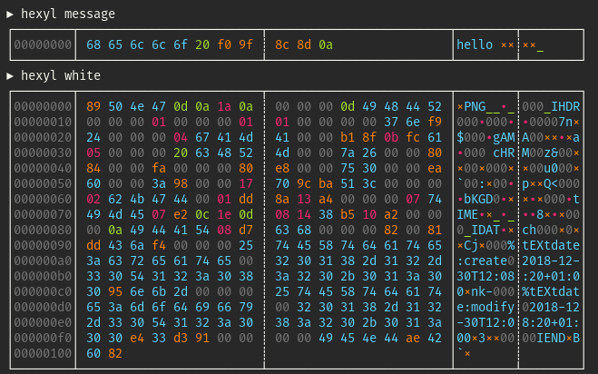
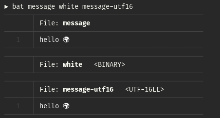

The difference between "binary" and "text" files
This article explores the topic of "binary" and "text" files. What is the difference between the two (if any)? Is there a clear definition for what constitutes a "binary" or a "text" file?
We start our journey with two candidate files whose content we would intuitively categorize as "text" and "binary" data, respectively:
echo "hello 🌍" > message convert -size 1x1 xc:white png:white
We have created two files: A file named message with the textual content
"hello 🌍" (including the Unicode symbol
"Earth Globe Europe-Africa") and a
PNG image with a single white pixel called white. File extensions are
deliberately left out.
To demonstrate that some programs distinguish between "text" and "binary" files,
check out how grep changes its behavior:
▶ grep -R hello message:hello 🌍 ▶ grep -R PNG Binary file white matches
diff does something similar:
▶ echo "hello world" > other-message ▶ diff other-message message 1c1 < hello world --- > hello 🌍 ▶ convert -size 1x1 xc:black png:black ▶ diff black white Binary files black and white differ
How do these programs distinguish between "text" and "binary" files?
Before we answer this question, let us first try to come up with a definition.
Clearly, on a fundamental file-system level, every file is just a collection of
bytes and could therefore be viewed as binary data. On the other hand, a distinction
between "text" and "non-text" (hereafter: "binary") data seems helpful for programs
like grep or diff, if only not to mess up the output of
your terminal emulator.
So maybe we can start by defining "text" data. It seems reasonable to begin with an
abstract notion of text as being a sequence of
Unicode code points. Examples of
code points are characters like k, ä or א, as
well as special symbols like ☢ or 🙈. To
store a given text as a sequence of bytes, we need to choose an encoding.
If we want to be able to represent the whole Unicode range, we typically choose UTF-8,
sometimes UTF-16 or UTF-32. Historically, encodings which support just a part of
todays Unicode are also important. The most prominent ones are US-ASCII and Latin1
(ISO 8859-1), but there are many more. And all of these look different on a byte level.
Given just the contents of a file (not the history on how it was created), we can therefore try the following definition:
A file is called "text file" if its content consists of an encoded sequence of Unicode code points.
There are two practical problems with this definition. First, we would need a list of all possible encodings. Second, in order to test if the contents of a file is encoded in a given encoding, we would have to decode the whole contents of the file and see if it succeeds1. The whole process would be really slow.
It turns out that there is a much faster way to distinguish between text and binary files, but it comes at the cost of precision.
To see how this works, let's go back to our two candidate files and explore their
byte level content. I am using hexyl
as a hex viewer, but you can also use hexdump -C:

Note that both files contain bytes within and outside of the ASCII range
(00…7f). The four bytes f0 9f 8c 8d in the
message file, for example, are the UTF-8 encoded version of the Unicode
code point U+1F30D (🌍). On the other hand, the bytes 50 4e 47
at the beginning of the white image are a simple ASCII-encoded version
of the characters PNG2.
So clearly, looking at bytes outside the ASCII range can not be used as a method to
detect "binary" files. However, there is a difference between the two files.
The image file contains a lot of NULL bytes (00) while the short text
message does not. It turns out that this can be turned into a simple heuristic
method to detect binary files, since a lot of encoded text data does not contain any
NULL bytes (even though it might be legal).
In fact, this is exactly what diff and grep use to detect
"binary" files. The following macro is included in
diff's
source code (src/io.c):
#define binary_file_p(buf, size) (memchr (buf, 0, size) != 0)
Here, the memchr(const void *s, int c, size_t n)
function is used to search the initial size bytes of the memory region
starting at buf for the character 0. To speed this process
up even more, typically only the first few bytes of the file are read into the buffer
buf (e.g. 1024 bytes). To summarize, grep and diff
use the following heuristic approach:
A file is very likely to be a "text file" if the first 1024 bytes of its content do not contain any NULL bytes.
Note that there are counterexamples where this fails. For example, even if unlikely, UTF-8-encoded text can legally contain NULL bytes. Conversely, some particular binary formats (like binary PGM) do not contain NULL bytes. This method will also typically classify UTF-16 and UTF-32 encoded text as "binary", as they encode common Latin-1 code points with NULL bytes:
▶ iconv -f UTF-8 -t UTF-16 message > message-utf16 ▶ hexyl --panels=1 message-utf16 ┌────────┬─────────────────────────┬────────┐ │00000000│ ff fe 68 00 65 00 6c 00 │××h⋄e⋄l⋄│ │00000008│ 6c 00 6f 00 20 00 3c d8 │l⋄o⋄ ⋄<×│ │00000010│ 0d df 0a 00 │_×_⋄ │ └────────┴─────────────────────────┴────────┘ ▶ grep . message-utf16 Binary file message-utf16 matches
Nevertheless, this heuristic approach is very useful. I have written a small library in Rust which uses a slightly refined version of this method to quickly determine whether a given file contains "binary" or "text" data. It is used in my program bat to prevent "binary" files from being dumped to the terminal:

Footnotes
1 Note that there are some encodings that write so-called
byte order marks (BOM)
at the beginning of a file to indicate the type of encoding. For example, the
little-endian variant of UTF-32 uses ff fe 00 00. These BOMs would
help with the second point because we would not need to decode the whole
content of the file. Unfortunately, adding BOMs is optional and a lot of encodings
do not specify one.
2 50 4e 47 is part of the
magic number
of the PNG format. Magic numbers are similar to BOMs and a lot of binary formats
use magic numbers at the beginning of the file to signal their type. Using magic
numbers to detect certain types of "binary" files is a method that is used by the
file tool.